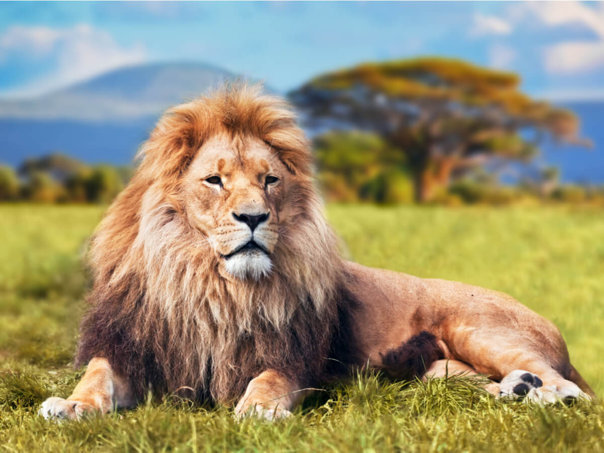

Animales del Presente

León
El león es un felino majestuoso y el rey de la selva. Se caracteriza por su melena y su gran fuerza.

Elefante
El elefante es el animal terrestre más grande y posee una trompa larga y poderosa. Es conocido por su inteligencia y sociabilidad.

Pingüino
Los pingüinos son aves marinas no voladoras que se adaptan perfectamente al frío y viven en grandes colonias.

Jirafa
Los pingüinos son aves marinas no voladoras que se adaptan perfectamente al frío y viven en grandes colonias.